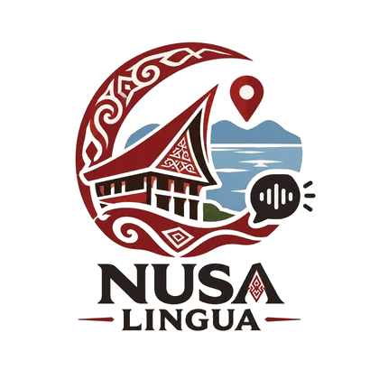
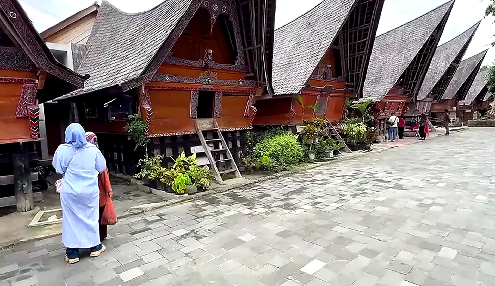
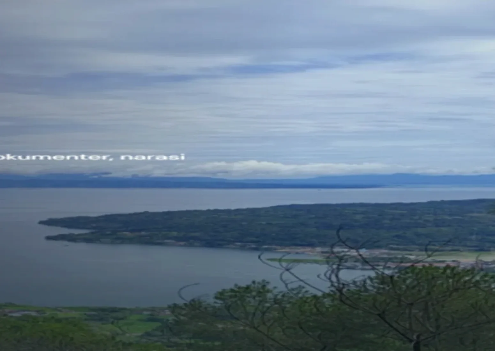
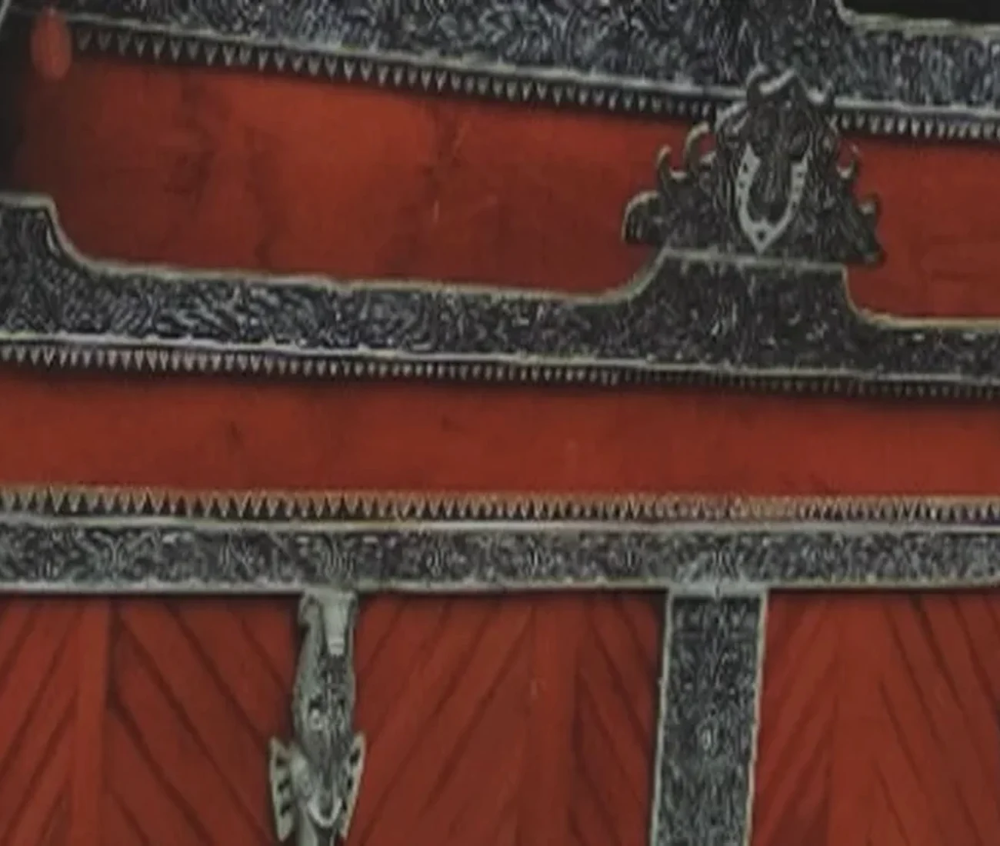
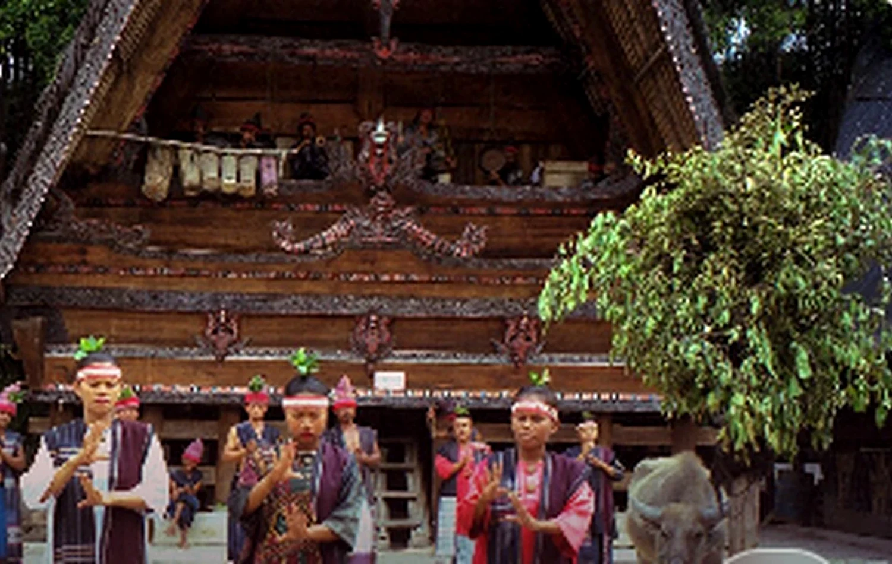
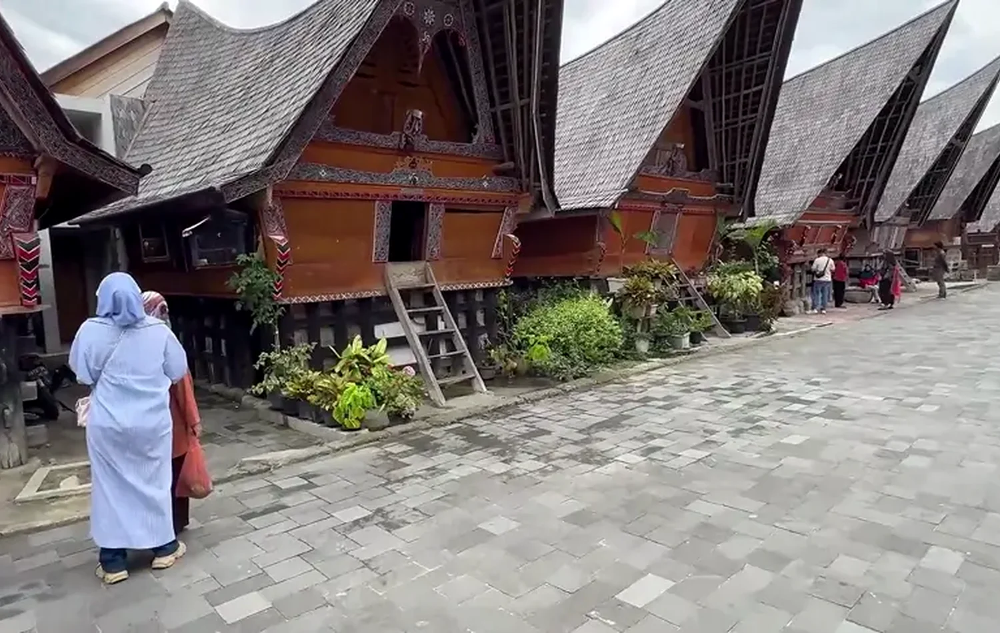

Siluet rumah tradisional
Mengingatkan pada arsitektur Batak Toba dan ruang kehidupan yang melahirkan banyak kisah.

Nusa Lingua THE HERITAGE EXPERIENCE
NUSA LINGUA mempertemukan tempat, bahasa, dan manusia melalui pengalaman digital budaya Batak Toba — agar setiap perjalanan lebih dari sekadar melihat.
Di balik rumah tradisional, sehelai ulos, dan setiap sapaan, terdapat pengetahuan serta kisah yang dijaga oleh masyarakat.
NUSA LINGUA adalah konsep platform wisata budaya digital yang berangkat dari Pulau Samosir, Sumatera Utara. Kami merancang ruang untuk mengenal destinasi, memahami bahasa, dan menyusun kunjungan dengan lebih hormat pada budaya yang hidup.
Ia bukan sekadar katalog wisata: pengetahuan lokal menjadi pusat pengalaman, sedangkan teknologi berperan sebagai jembatan, bukan pengganti pemilik cerita.
Melambangkan ruang-ruang budaya Nusantara, dimulai dari Samosir sebagai titik awal perjalanan.
Melambangkan komunikasi, percakapan, dan upaya saling memahami di tengah perbedaan bahasa.
Bersama, NUSA LINGUA adalah nama konseptual untuk sebuah jembatan antara tempat, bahasa, dan warisan. Ini penafsiran identitas merek, bukan terjemahan sebuah frasa baku.
Logo menggabungkan simbol perjalanan, bahasa, lanskap, dan arsitektur dalam satu komposisi. Setiap elemen dipahami sebagai bahasa visual modern NUSA LINGUA.
Mengingatkan pada arsitektur Batak Toba dan ruang kehidupan yang melahirkan banyak kisah.
Menghadirkan Danau Toba sebagai lanskap dan titik berangkat pengalaman.
Mewakili eksplorasi tempat melalui NUSA TWIN dan perjalanan yang dapat direncanakan.
Melambangkan percakapan dan penghubung bahasa melalui LINGUA AI.
Mengambil inspirasi visual dari kekayaan ragam hias Batak Toba, tanpa mengklaim sebagai motif adat khusus.
Merah, hitam dan putih merupakan warna yang dikenal dalam banyak karya ulos serta gorga Batak Toba. Palet situs mengolah inspirasi tersebut dengan krem, biru dan emas untuk kebutuhan desain digital. Makna merek di bawah adalah interpretasi kreatif, bukan aturan adat universal.

Warna-warna ini hadir sebagai lapisan sebuah lanskap: marun dan arang menjadi akar, krem memberikan ruang, biru menyuarakan danau, sementara emas menjadi aksen. Ini filosofi merek NUSA LINGUA, bukan tafsir tunggal adat Batak Toba.
Keberanian menjaga dan merawat kisah.
Ruang yang lapang dan keramahan bertemu.
Kedalaman, fokus, dan ingatan sejarah.
Danau Toba sebagai lanskap perjumpaan.
Ketelitian proses, detail dan kerja manusia.
 HUTA RAJA / PROSES MENENUN ULOS
HUTA RAJA / PROSES MENENUN ULOS
Ulos mempunyai ragam desain, teknik, dan penggunaan. Misalnya Ragi Hotang, yang merujuk pada jalinan rotan, serta Ragidup yang dikenal dalam tradisi tekstil Batak Toba. Tidak semua kain bermotif geometris dapat disebut sebagai motif ulos tertentu.
Foto yang ditampilkan adalah dokumentasi tenun sungguhan. Nama dan kategori setiap motif pada foto belum tentu dapat diidentifikasi tanpa pemeriksaan kurator.
Musik halaman ini merupakan komposisi baru dengan bunyi perkusi dan petikan, bukan rekaman adat. Untuk mendengarkan dokumentasi gondang asli, kunjungi arsip audiovisual BRIN ↗ Penggunaan rekaman tradisional di website harus sesuai izin atau lisensi pemilik rekaman.
Tiga fitur dari proposal NUSA LINGUA saling mendukung agar perjalanan dapat dipahami sebelum, selama, dan setelah berkunjung.

01Peta destinasi, cerita, dan konteks budaya dalam satu pengalaman geospasial.

02Glosarium ungkapan wisata dengan perhatian pada makna dan etika sapaan.

03Itinerary berdasarkan minat dan waktu untuk mendukung eksplorasi yang bertanggung jawab.
Cerita budaya interaktif menjadi bagian NUSA TWIN: video, narasi, subtitle, dan tautan menuju tempat yang berkaitan.
Masuk ke cerita ↗
Ulos memiliki fungsi sosial yang tidak dapat direduksi menjadi corak semata. Rumah tradisional menyimpan pengetahuan arsitektur dan kehidupan, sedangkan sapaan Batak Toba memiliki konteks hubungan sosial.
Karenanya, pendekatan NUSA LINGUA mengutamakan sumber pengetahuan, atribusi, persetujuan, dan hak komunitas untuk mengoreksi atau membatasi informasi.
Menjadi ruang digital yang membantu wisatawan menghargai budaya Batak Toba melalui akses informasi, dialog yang lebih baik, serta peluang keterlibatan masyarakat setempat.
Membuat cerita destinasi lebih mudah diakses melalui peta dan interpretasi edukatif.
Mempermudah ungkapan wisata tanpa mengabaikan konteks kekerabatan dan adat.
Memberi ruang bagi pengelola, penutur, dan pelaku budaya untuk meninjau informasi.
Menghubungkan rute kunjungan dengan etika dan peluang belajar dari pelaku setempat.
Mulai mengenal Samosir melalui NUSA TWIN, LINGUA AI, dan NUSA GUIDE.
Kunjungi NUSA LINGUA ↗